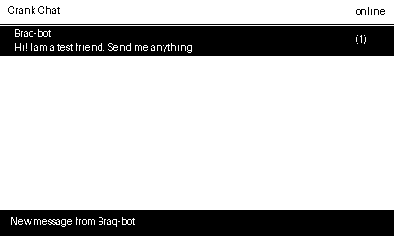

An experiment
Crank Chat
Could you text from a Playdate? I built this to find out, and yes, you can. It works on a real Playdate, with messages going both ways. It is also slow, because every letter is picked with the crank, so treat it as a fun proof of concept, not an everyday messenger.
Crank Chat shows your conversations as chat bubbles, uses the Playdate's crank keyboard to type, and has a list of quick replies for when you do not feel like turning the crank for every letter.
Messages travel through a tiny relay program on your own computer, which talks to a Telegram bot you make yourself. That keeps your secrets off the Playdate.


Version 0.1 · early release
How to set it up
- Start the relay. Unzip the relay download and open Terminal (Applications › Utilities). Type python3 and a space, drag relay.py onto the Terminal window, and press Return. If your Mac offers to install developer tools, click Install, then try again. The relay prints an address and a secret key. Leave the window open.
- Put the app on your Playdate (Reboot to Data Disk, copy CrankChat.pdx into Games).
- Open Crank Chat on the same Wi-Fi, press A, and type the address and the key with the crank keyboard. A demo friend, Braq-bot, answers your first message.
- Add Telegram or phone texts. README.txt in the relay download walks through making your own Telegram bot, turning on phone texts on a Mac, and what to do if you see an error.
Who can message me?
Only the Telegram numbers you put in the allow list. Anyone else who finds your bot is ignored.
Does it work with WhatsApp or normal text messages?
WhatsApp does not allow this kind of app. On a Mac, the relay can also send and read texts through the Messages app for people you add by phone number; that part only works on a Mac. It needs Automation permission to send and Full Disk Access to read incoming texts, and it reads only the numbers you add. Regular SMS also needs Text Message Forwarding on your iPhone.
What is not finished?
It works on a real Playdate with Telegram and with phone texts, but it has had little everyday use. Your computer has to keep the relay running, and the Playdate has to be on the same Wi-Fi. Messages are not end-to-end encrypted, and the key travels over your home Wi-Fi unencrypted, so use it for casual chat.
Made by Boraq Abdulmajeed. Free to use. Playdate is a trademark of Panic Inc.; this project is not made or endorsed by Panic. Questions or a bug? Get in touch.